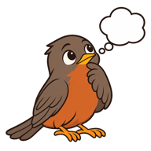

Oi! 👋 Eu consulto o ClassApp e o Portal do Aluno em tempo real pra você. Pode perguntar sobre notas 📊, provas 📅, horários 🕐, tarefas 📒 ou os avisos 📣 da escola. Enquanto eu busco, você vê cada fonte que eu abro.
Exposalê · dados reais, apenas leitura 🔒

🔐 Verificação em duas etapas
O Sabiá parou sozinho na tela de verificação. Digite o código que chegou por SMS.